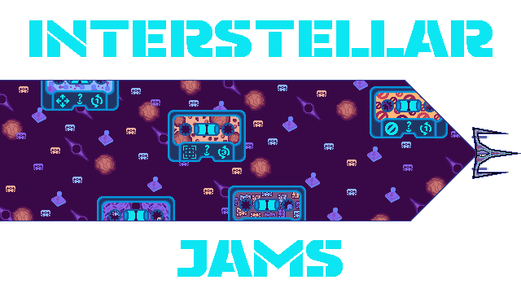

Game Rules
Game is designed for 2 players starting on the left. The players take turns making moves to reach the objective, determined by the player's skill level. The winner is the first player to reach the end. Every turn, the player has a choice: Skip turn and get 2 skill cassettes or move 1 square in any direction, but not diagonally or if something is in the way, if the player does not choose cassettes or move forward, he can just remain still.
During the next rounds players have two main options in that round:
- 1-Use 1 skill card, and make 1 move.
- 2-Use 2 skill cards, without opportunity to move this turn.